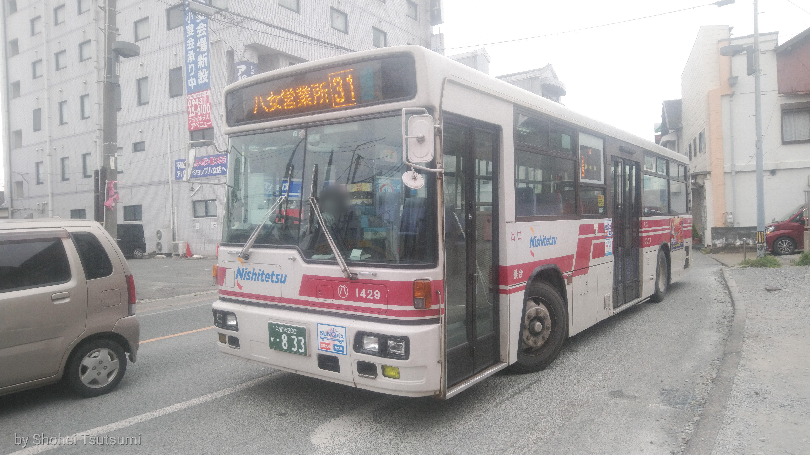

【八女1429号車 2020年3月26日に撮影】
1999年式の車両で2022年現在でも運用されている
バスと電車について語るだけです
見たい方はお進みください
見たくない方は回れ右してこちらからお帰りください
バスについて
僕のパワーの元（？）であるバスです
ただ他のバス会社についてdisる気は全くない訳ではありません
用は福岡県民なら誰でも知ってるであろう「西鉄バス」しか興味を示しません
そんな「西鉄バス」について語っていきます
車番について
バス一台ごとに車番が必ず割り当てられています
私の場合、この車番からスタートしました
車番は一定の規則で割り当てられていて
年式・製造会社・所属営業所が判別できる様になっています
この下に主な車番の製造会社の割り当てをまとめます
- 1000～2000番台：いすゞ自動車
- 3000～4000番台：三菱ふそう
- 5000～6000番台・9000番台：日産ディーゼル工業 ※
- 7000～8000番台：日野自動車
※についてですが、日産ディーゼル工業は2010年に社名変更し、
現在の「UDトラックス」になっています
現在はバス事業から撤退していて割り当てられていません
9000番台は0000番台と共に小型・特殊車に割り当てられていたそうですが、
2004～2010年にかけて大量導入された際に番号が足りなくなり
9000番台が割り当てられたという噂です
写真集

【久留米2699号車 2020年6月3日に撮影】
2012年式の車両で新製配置時より
久留米地区の路線で運用されている
【久留米2698号車 2020年6月3日に撮影】
2012年式の車両で上記の2699号車と共に
久留米地区の路線で運用されている
【久留米1443号車 2020年6月3日に撮影】
2020年に新型車両で導入された久留米地区では数少ないノンステップバスである
この車両と同年式である1440号車・1441号車、
2015年式の7927号車、2013年式の2814号車、
計5台がノンステップバスとして久留米地区に在籍している
【那珂川0103号車 2020年6月28日に撮影】
2020年式の車両で福岡地区での導入が進んでいる連接バスである
この車両はボルグレンであるが、ベンツの車両も在籍している
【片江8222号車 2020年9月22日に撮影】
2018年式の車両で福岡地区に在籍しているノンステップバスである
近年、福岡地区ではこのタイプの車両が増加している
電車について
西鉄といえばバスもありますが電車もありましたね、ハイ
そんな訳で、電車も語っていきます
形式について
製造会社は「川崎重工」だけです
川崎といえばバイクで有名と思われますが、全く同じ会社になります
ただ、製造しているモノが違うということだけですね・・・
現在、運用に使われてる形式が古い順からまとめます
- 5000形
【1975年に登場】
50年近く経過した現在でも主力車両として
普通・急行・特急の運用についている - 6000・6050形
【6000形は1993年に、6050形は1995年に登場】
5000形と共に日中は普通
ラッシュ時は普通・急行・特急の運用についている - 7000・7050形
【7000形は2001年に、7050形は2003年に登場】
違いは7000形が4ドア、7050形が3ドアである
主に甘木～大牟田間のワンマン普通の運用についている - 3000形
【2005年に登場】
主に日中の特急・急行の運用についている - 9000形
【2016年に登場】
主に日中の急行の運用についている
写真集

【3000形 2019年10月27日に撮影】
【6000形 2020年2月22日に撮影】

【5000形 2020年9月22日に撮影】